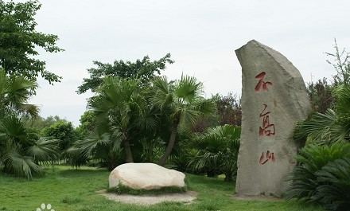
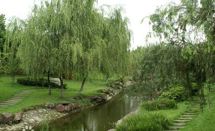

“不高山”位于川大江安校区西北角的一个小丘，江安河以一道优美的曲线划过此处，据说由校内明远湖修建时挖出的湖泥积成。不高山是江安校区的标志景点之一。山不在高，有仙则名。这座山真的只是个小丘，无名地藏在川大，命名者以“不高”名之，或许正是以此寓“求学者”，要追求山的稳重，而不是自高自大。不高山不高，但立于山顶，仍可览明远湖全景。而大抵因为其不到一百米的高度而恐被人认错，特地在山前立一石碑，上书——不高山。不高山上四季常青，有树有竹有草，而冬日更有腊梅飘香。
不高山附近的河，名为“不深河”，有“水不在深，有龙则灵”之意。不去讲究山水的风光如何，仅其独特的名字，就够让人回味了。
